Many years ago while we was both in school we met in this little game called flyff. We slowly grew closer with a tight group of friends eventually doing small group chats on skype which ended up going onto video chats. Slowly over time it moved over to 1-1 video calls with us. Sadly as time went on we grew further apart and eventually we didn't have much contact. We kept eachother on facebook which is where we eventually connected again.
In march of 2020 we reconnected again through facebook and started talking and enjoying eachothers company. We played a game together animal crossing.
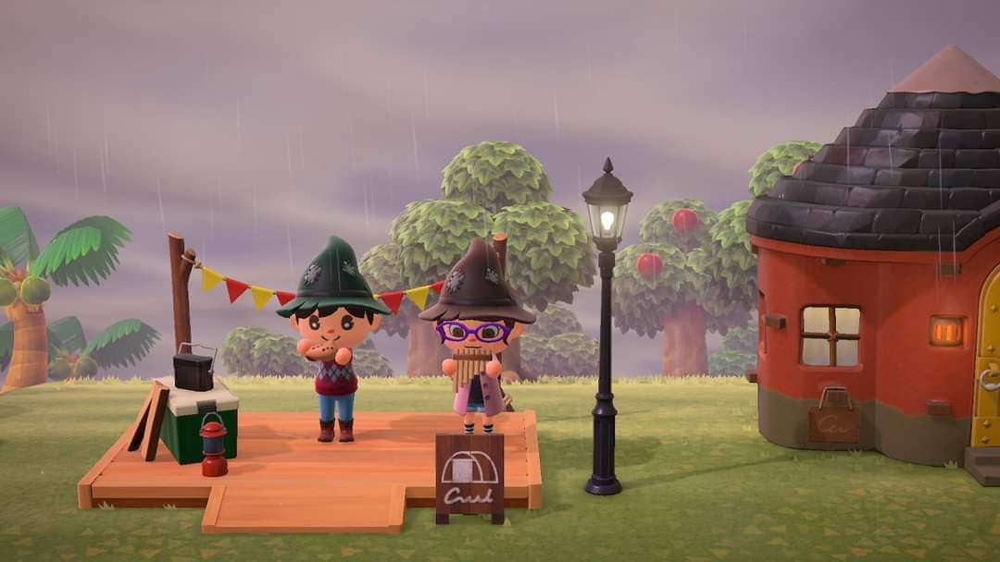 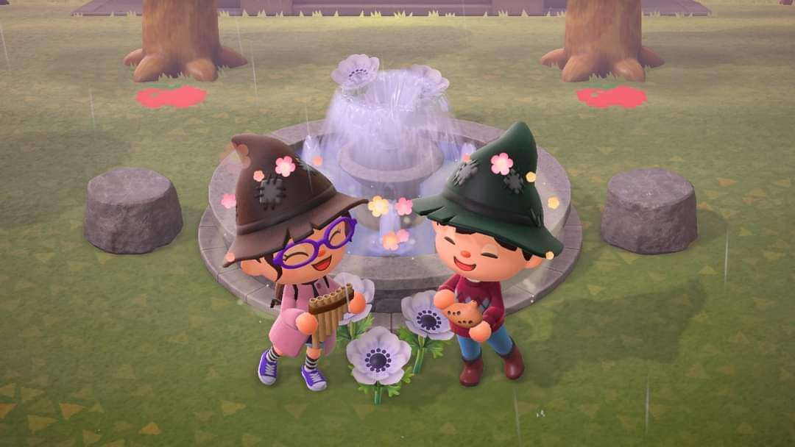From there we started to watch movies together and shows. It began with watching shows like prison break and breaking bad and movies such as brain on fire and shutter island. Slowly over time we have watched many movies and shows and it is a staple of what we do together.
We have played many games together over the years with one of the main games we have played has been fall guys which we have enjoyed playing together and have met some cool people along the way.
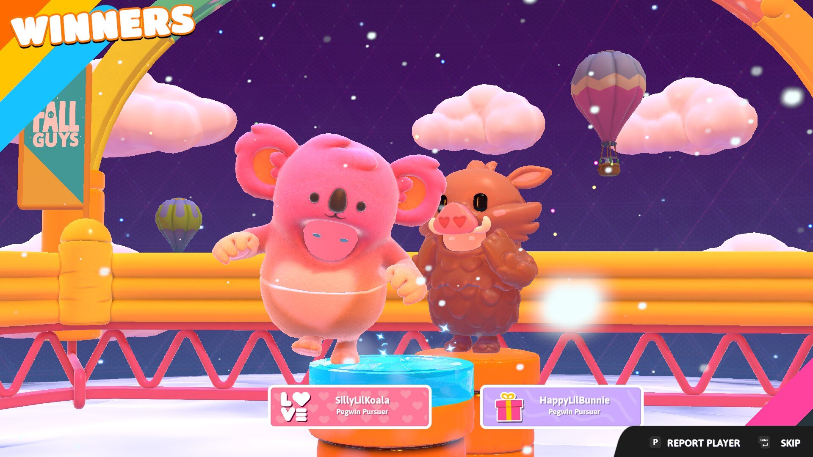 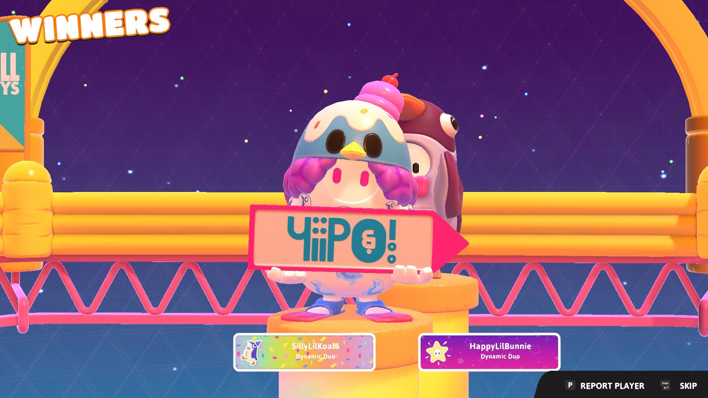 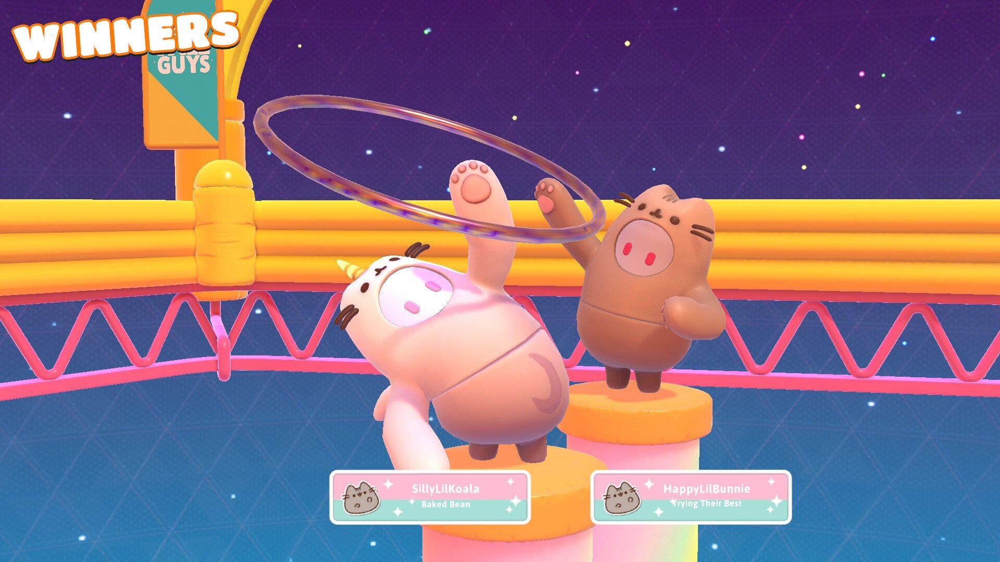We offical started dating as a couple from 14th february 2021 but due to restrictions we was unable to meet for quite some time however we continued to enjoy the time we spent together online and built our relationship as we grew closer and always enjoyed eachothers company.
Our first visit was an amazing experience we instantly loved eachothers company and we got along so well. We was both very nervous with meeting the very first time but once we met that faded very quickly. The first visit was on march 13th 2022 which we stayed in a hotel: Hyatt House on Maecliff Drive in Warrenville IL. Here are some photos of outside of our hotel room


We enjoyed even the basic things together such as shopping together and loved every second of being together and enjoyed all the activites we was finally able to share as a couple. We finally was able to have our first dinner date it was so nice to be able to do things together now in person rather than from a screen and which after our dinner we had a nice walk together. We was finally able to cuddle up together as we watch movies both in the hotel and at the movie theatre. We had did many activites together we had a lovely picnic in a nice little park called fabyan forest preserve it was a nice little park we had walked around then we had a picnic. The zoo being the longest activity we did as it lasted all day. It was a very nice day and we enjoyed the day walking around seeing all the animals and with the weather being so nice.
 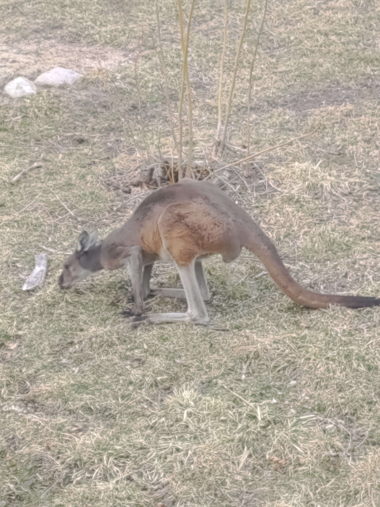
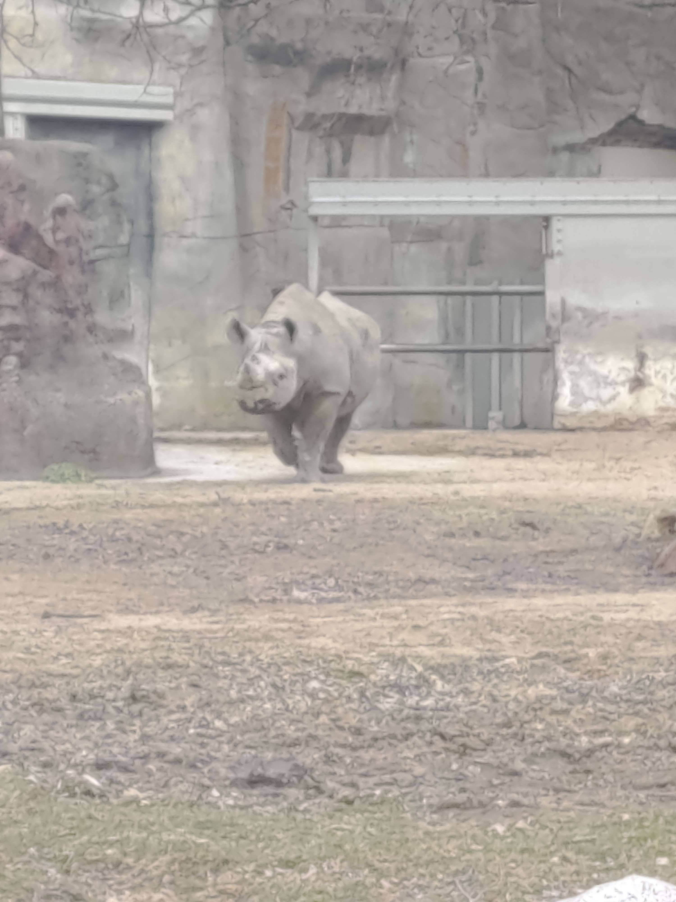
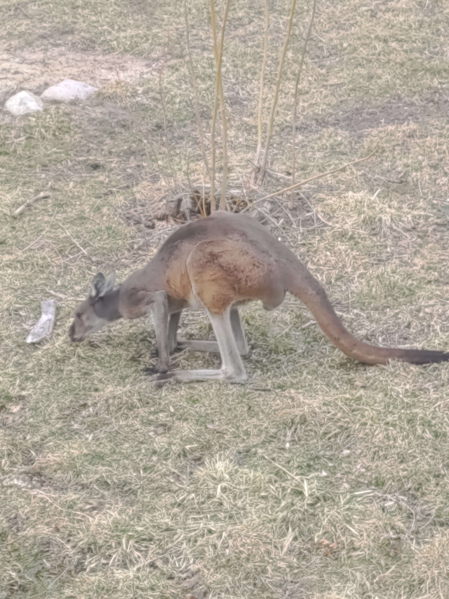
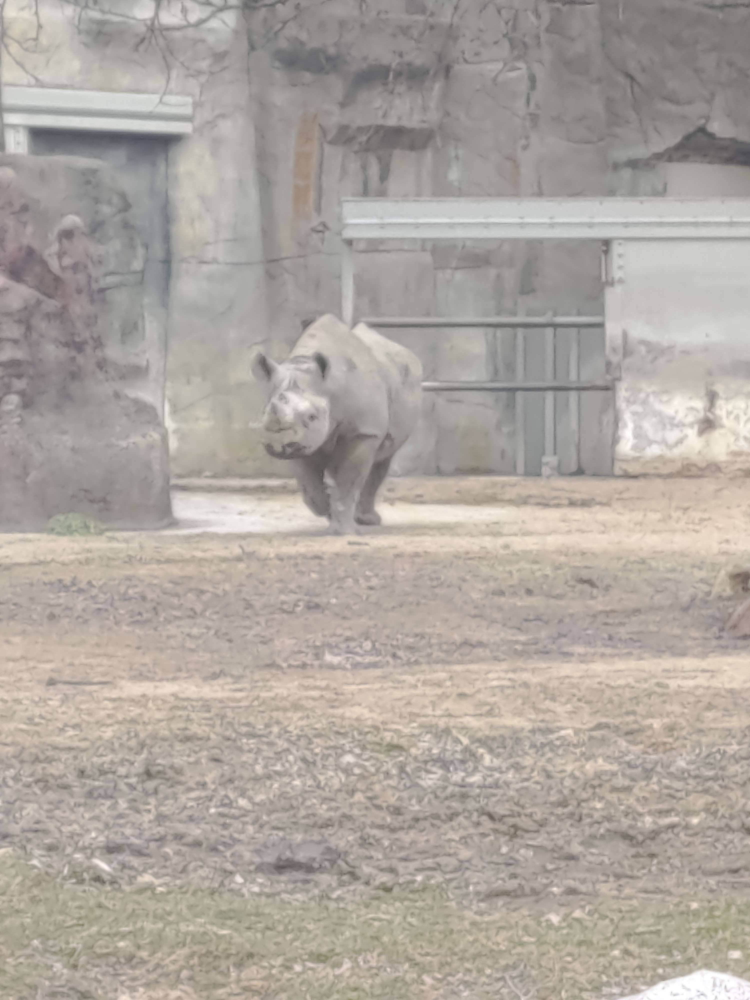
The hardest part for both of us was saying goodbye going back to the airport and having to go back home it has been very tearful and it is very hurtful to both of us to having to go back to only being able to see eachother through a screen and not being able to give the physical affection that we both need.
We continued to do what we can online to spend time together and connect together but after meeting we both missed eachother so much more and missing what we have done together in person going back to online was very difficult
We continued to meet several more times and enjoyed every part of each visit that has happened. total of 3 more visits has happened and upcoming one is just next month. We have enjoyed every minute of every visit and everything we have done together
On 21st october 2022 I had proposed in our very first park the fabyan forest preserve which was the perfect spot. We set out to have a picnic which it was a lovely day and we enjoyed our time and after we had eaten I had proposed which she had said yes and that had made me the happiest and luckiest man on the planet.
We spent halloween together in 2022 after getting engaged we did enjoy driving around to local houses and seeing the decorations they had put up outside their houses
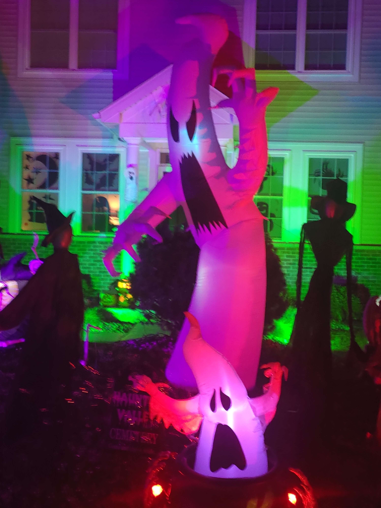 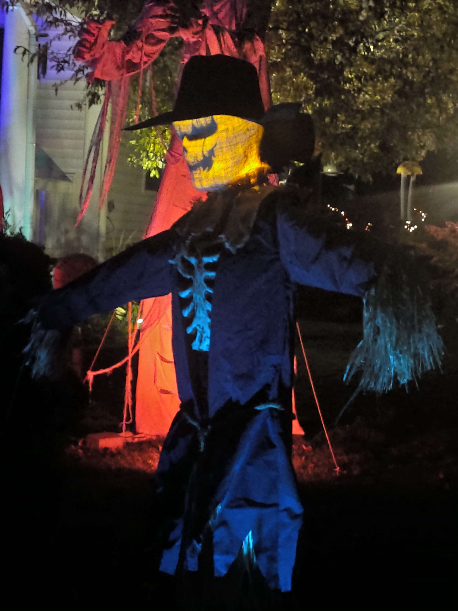 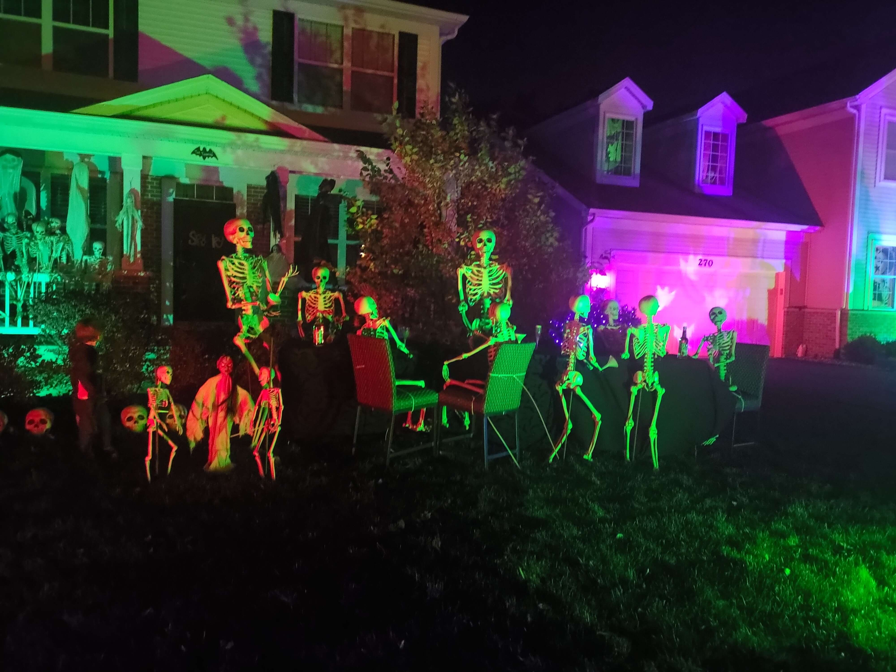 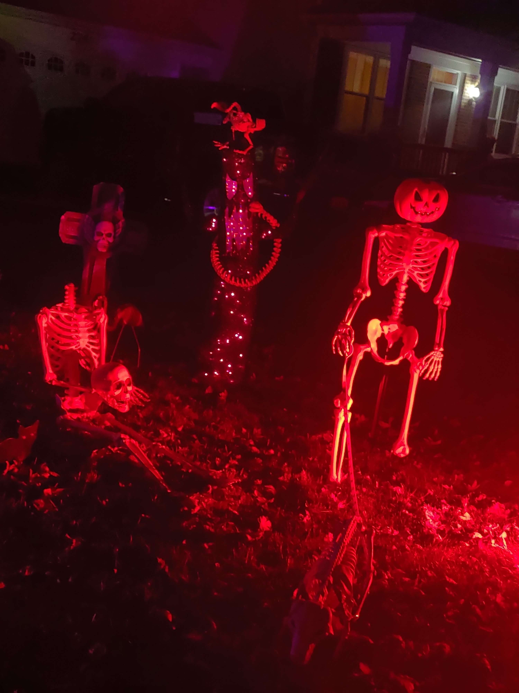 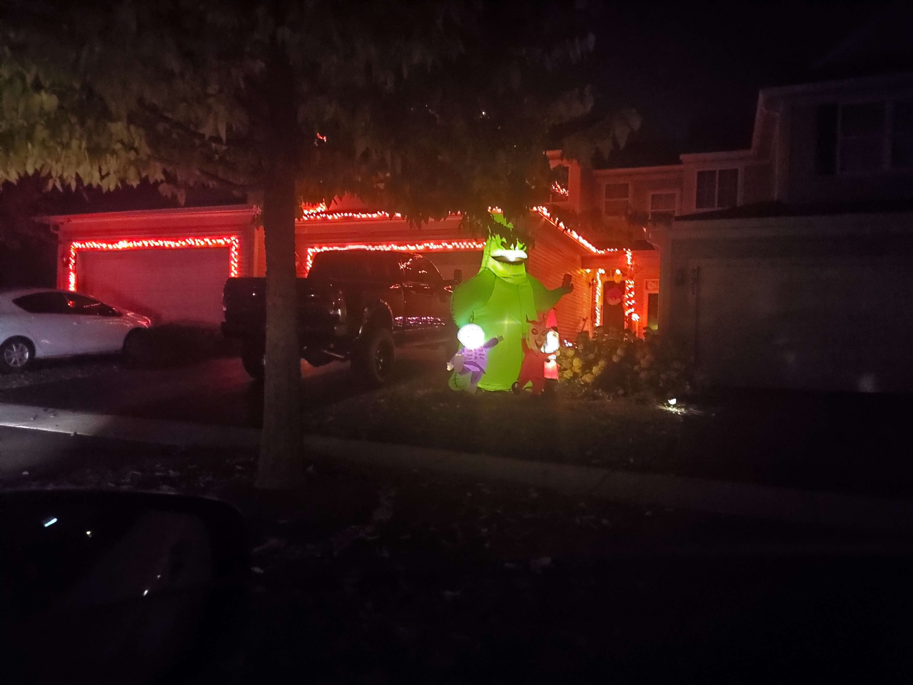 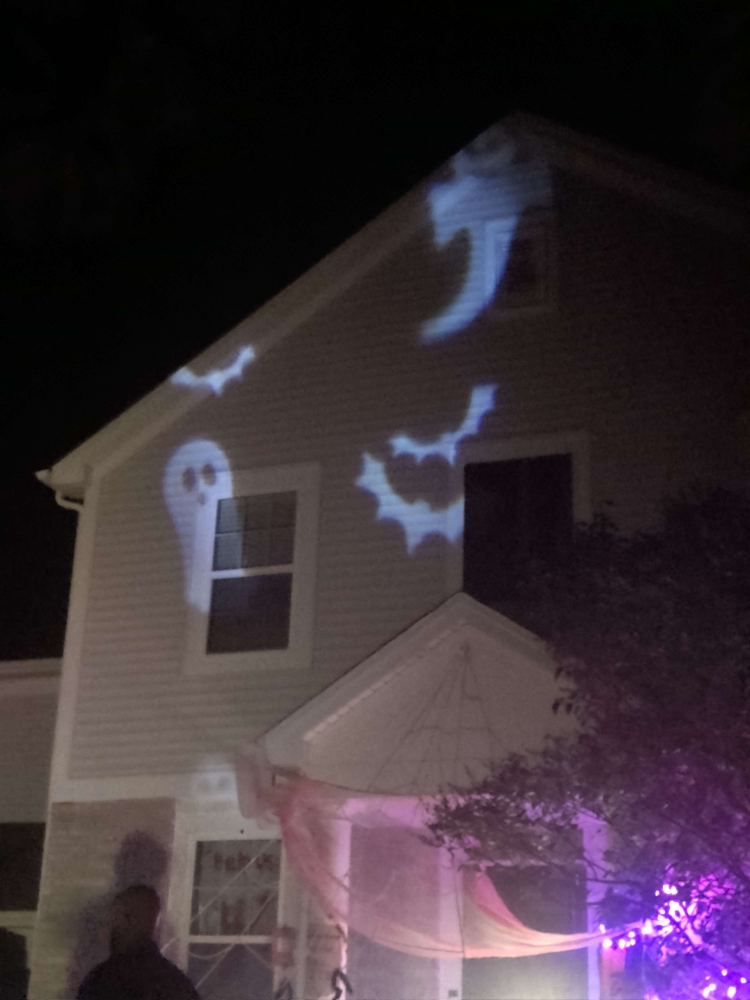